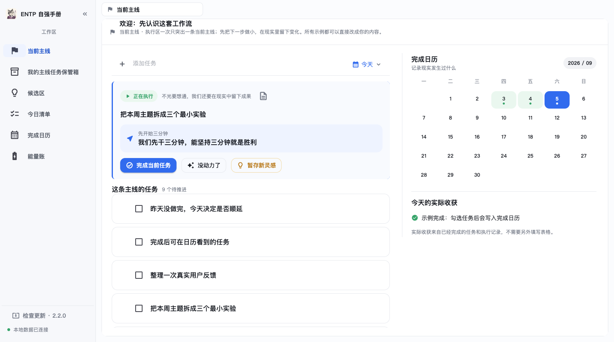
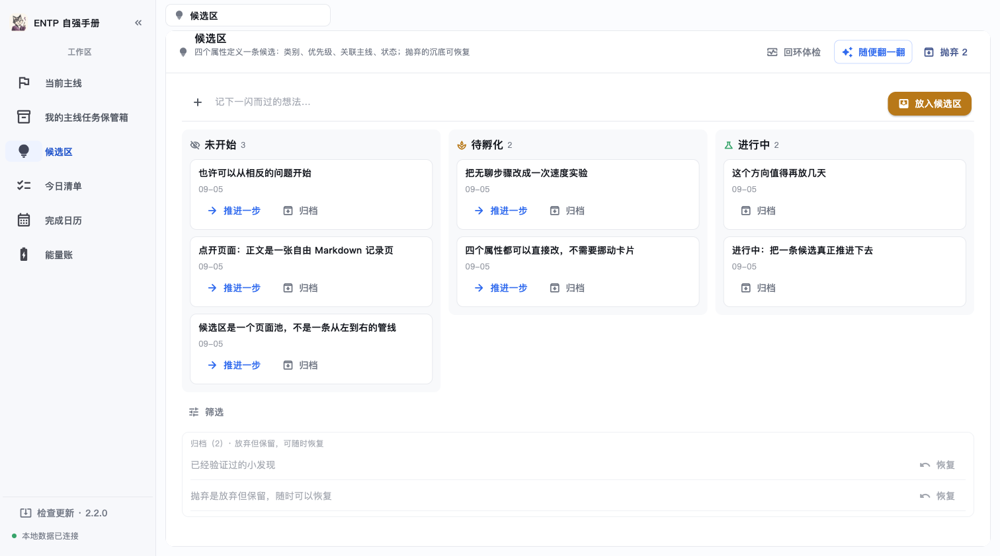
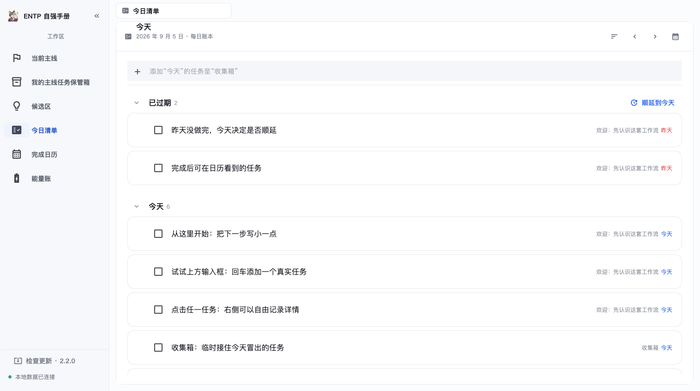
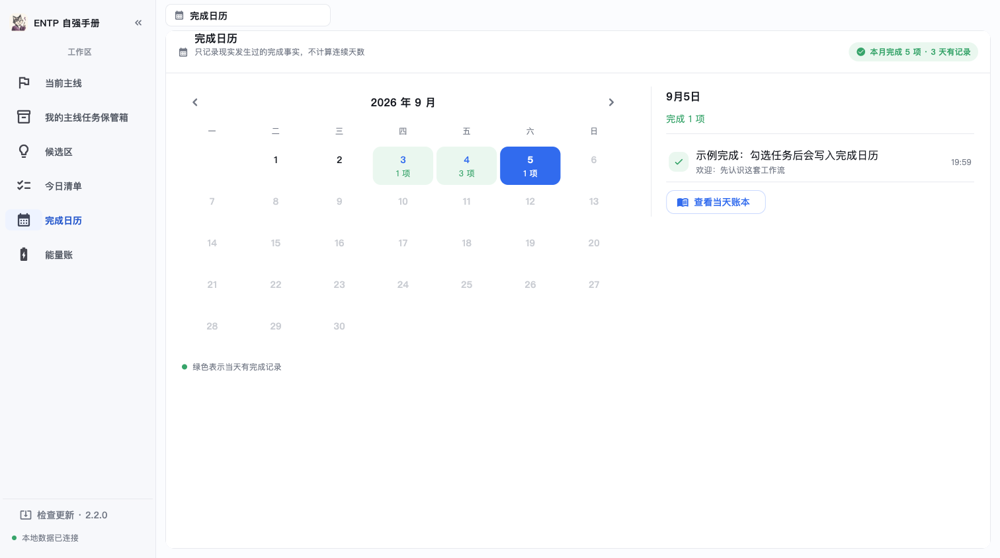

一款 Windows 本地的注意力工作台：一次只推进一件事；冒出来的念头一行收进候选区，不弹表单、不用马上整理，也不必都变成任务；卡住了，再回来找下一步。
免费 · 无账号 · 数据在你自己电脑上；当前版本与注意事项见下方下载说明
如果你经常「想通了就失去兴趣」，问题多半不是懒——是好奇心在「想通」的瞬间被提前兑现了。这套系统把好奇心当作资源来管理。
多条主线，一次只推进一条；任务是可验证的最小行动，不是项目。
执行中冒出新想法，一行输入回车进候选区——不弹表单，但默默记下出身主线。
不是管线，不是待办清单：每条候选带四个并列属性——类别、优先级、关联主线、状态。分栏只是状态标签，不用清空。
「没动力了」不是失败信号，是回到候选区的入口；顶部提醒你从哪条主线的哪个任务过来。
找到切入口，一键把灵感转成《当前主线》的最小行动，跳回执行区继续推进。
Linear 式工作区：轻量标签栏、安静的蓝白界面、零花哨。以下截图取自 v2.2.0 开发版（与可下载版本同一应用），画面为示例数据。

焦点任务、最小下一步、现实执行记录

四个并列属性，按状态分栏；不是第二份待办清单，抛弃沉底可恢复

按日期保存的账本，不是每天凌晨重置的临时页

只显示发生过的完成事实，不算打卡连续天数
每个入口只解决一件事，不做成「什么都能记」的怪物。
一次一条主线的执行区：焦点任务、暂存灵感、没动力入口。
其他主线收进保管箱——保留可能性，不争夺注意力。
灵感页面池：出身章、挂/卸主线、一键转最小行动。
每日账本：计划、完成、结转都是不可覆盖的历史事实。
月度完成分布 + 当天详情；改名重开不篡改过去。
一行打卡入 Nowledge 账本，能量净额轨迹只读展示。